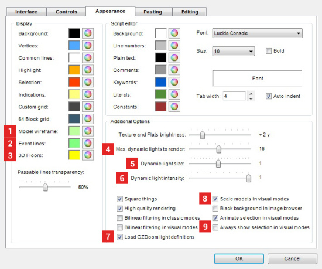

This page lists new options added in GZDoom Builder. Preferences window overview is avaliable here.
There are several new options avaliable in GZDoom Builder's Preferences window (F5):
 |
1. Vertex scale factor: controls the size of vertex handles. 2. Sync camera position between 2D and 3D modes: when enabled, GZDoom Builder will center 2D-mode on Visual Camera position when you leave Visual mode, and will place Visual Camera at cursor position when you toggle from 2D-mode to Visual Mode (unless you have Visual Mode camera thing in your map). 3. Rendering toolbar: if enabled, Rendering toolbar will be shown in the main editing window. |
|  | 1. Model wireframe color: lets you choose a color, which is used to render model wireframe in 2D-mode. 2. Color of event lines. 3. Color, used in Classic modes to indicate that sector has 3D floors. 4. Number of newly created sectors to colourise using different color. Possible values are [0..8]. 5. Maximum dynamic lights to render: lets you choose how many dynamic lights to render in Visual mode. Decrease this to improve performance when Dynamic Lights Rendering is on. Possible values are [1..32]. 6. Dynamic light size: this option mimics GZDoom's "light size" option. 7. Dynamic light intensity: this option mimics GZDoom's "light intensity" option. 8. Load GZDoom light definitions: if enabled, GZDoom's built-in GLDEFS dynamic light definitions will be loaded. Warning: if a map is loaded, you'll need to reload resources after changing this option to apply the changes. 9. Scale models in visual modes: if enabled, height of models will be scaled down by 15% in Visual mode to mimick GZDoom's way of rendering. 10. Always show selection in visual modes: if enabled, selected surfaces will be highlighted in Visual mode even if "Show highlight" mode is disabled Doom Builder 2 behaviour). |
 |
1. Auto-align textures on newly created linedefs. When enabled, auto texture alignment will be applied to sidedefs created after drawing deometry. 2. Try to align horizontal texture offset of dragged geometry. When enabled, texture offsets of sidedefs, adjacent to dragged geometry, will be aligned to dragged geometry. 3. Don't move selection if any part of it is outside of map boundary. When enabled, geometry outisde of map boundaries can not be dragged. When disabled, geometry will be moved inside of map boundary, most likely destroying sector shapes in process (DB2 behaviour). |